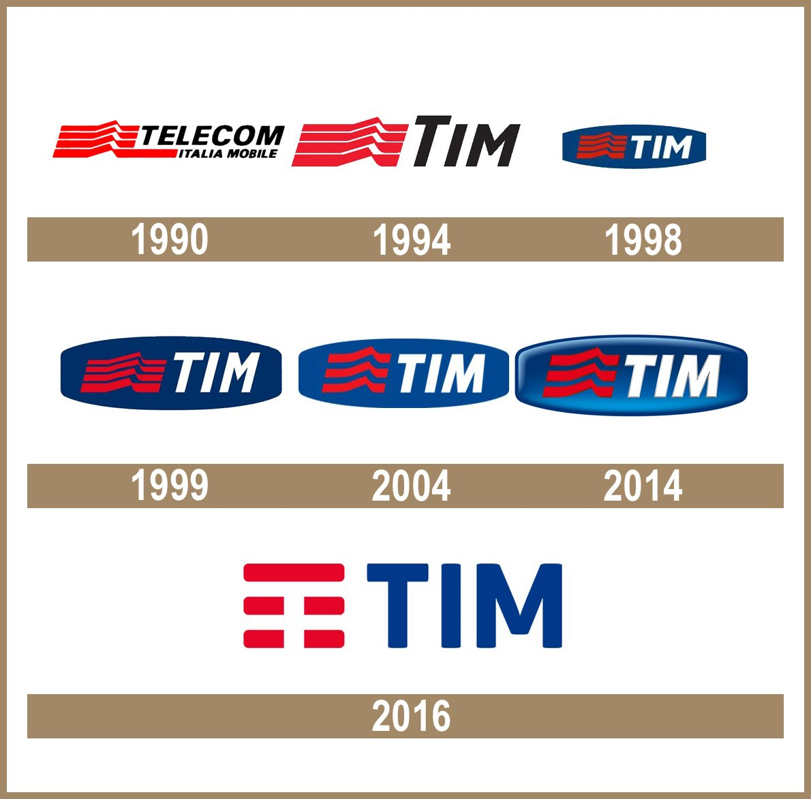

Nossa História
Começando do incio, a Tim incio na Itália após a divisão da telefonia fixa e móvel da Telecom Itália a qual foi fundada em 1958, a divisão ocorreu em 15 de julho de 1995 dando início oficialmente a Telecom Itália Mobile (Tim). Assim ficando responsável pela telefonia móvel e foi um dos principais responsáveis pelo surgimento dos celulares na Itália.
Só desembarcou no Brasil em 1998 a partir da divisão da Telecomunicações Brasileiras S.A, quando a Telecom Itália móvel(Tim), adquiriu a participação majoritária da Tele Celular Sul que estava sendo negociadas na bolsa de valores de Nova York. Inicialmente usando o nome de Tele Celular Sul, a empresa utilizou para expandir a sua área de cobertura no Brasil o processo de aquisição de concorrentes durante sua história, além das aquisições a Tim realizou a incorporação da tele Celular Sul (Tim Sul) e a Tele Nordeste Celular Participações (Tim Nordeste) o que ocorreu entre os anos de 2004 e o ano 2005, neste mesmo ano transfere sua sede para a cidade do Rio de Janeiro capital.
Ao longo dos anos a missão e visão foram se transformando, mas mantiveram seus valores, atualmente tem como Visão: "Inovação, Experiência do cliente e Agilidade"; Missão: "Evoluir juntos com coragem, transformando tecnologia em liberdade"; e Valor: "Coragem para inovar e sempre pensar diferente. Respeito é cuidar de todos e valorizar cada um. Liberdade para acessar o que é importante para você". Tendo como objetivo oferecer um serviço de alta qualidade pensado para a sua melhor experiencia, além disso, a Tim tem o projeto Portas Abertas, para que o consumidor possa verificar as ações de ampliação e melhorias realizadas pela Empresa.
Canal: LER E EMPREENDER.Video: A HISTÓRIA DA TIM - LER E EMPREENDER
Publicado: 8 de jul. de 2022